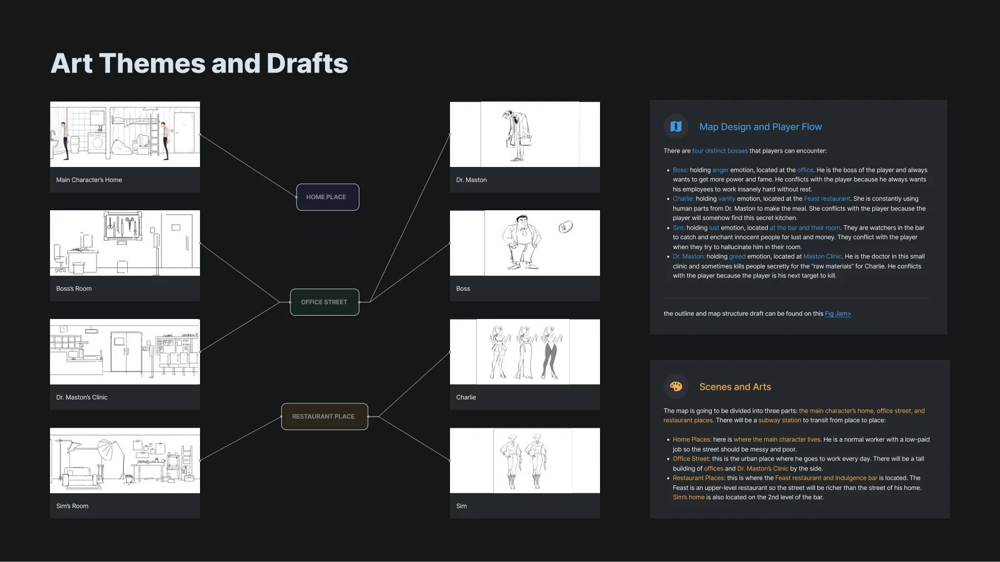
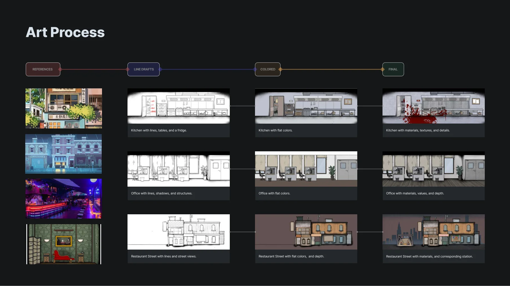
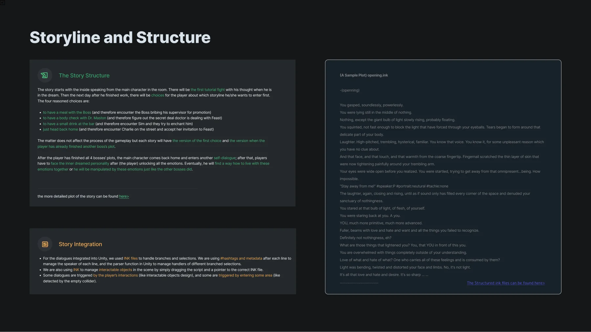

PROJECT 02 / 叙事游戏 · 技术美术2022
Emotional Damage
把情绪变成一场可以经历的冒险。
围绕四位 NPC 的情绪与冲突展开的 2D 叙事冒险，将场景、对话和战斗体验连接起来。

- 我的职责
- 场景与 UI 素材、叙事流程、引擎素材整合
- 方法与工具
- Unity / Ink / 2D Art
- 项目形式
- Game Off 2022 / Windows 作品
MY CONTRIBUTION
我在项目中做了什么。
负责连接美术、故事和程序团队，参与 2D 场景素材制作、流程策划以及文字和美术资产的 Unity 整合。
Game Off 2022 跨职能团队项目01 / EXPERIENCE
从角色动机，组织场景与冲突。
项目以 “If looks could kill” 为概念起点。玩家穿梭于住所、办公室、诊所和餐厅等场所，接触不同人物，并逐渐理解情绪与自身的关系。角色冲突与场景通路共同构成体验骨架。

02 / ART PIPELINE
让线稿、色彩和场景服务同一种体验。
场景从参考与线稿开始，经过平涂，再补充材质、明暗和空间细节。参与制作的素材需要同时满足叙事语境、玩家辨识与引擎集成的要求。

03 / INTEGRATION
把分支故事带进游戏引擎。
项目使用 Ink 组织分支与选择，以标签和元数据标记说话者等信息，再由 Unity 解析并驱动表现。对话既可由玩家主动交互触发，也可由进入区域触发。我的工作重点是让故事流程、场景和素材在引擎中衔接。

团队成员包括 PassbyKamenRider、Rod、BUBUFF、Hachi、Luna Wang、Bucket Fish、SnBerry、Jessica、Ryui、Carrot_Yu、David Zhu、Joy、Xinyu Wu、Shinya。完整署名见原作品集与游戏发布页。
发布页提供 Windows 下载；页面保留 Game Jam 版本的已知问题说明。
下载原作品集 PDF ↓